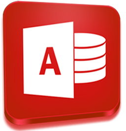
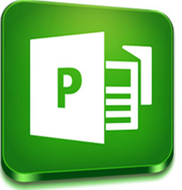
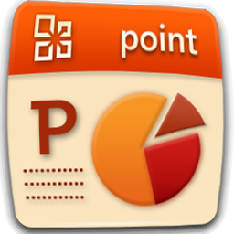

OPERADOR DE PC
Como la tarea de un operador de PC es eminentemente práctica, el curso está básicamente fundado sobre distintas clases de ejercicios para operador de PC Administrativo. En este curso se aprende a manejar los diferentes programas utilitarios. Como ser:
WORD

Microsoft Word, es un programa editor de texto ofimático muy popular, que permite crear documentos sencillos o profesionales. Básicamente, un procesador de texto, es un programa que permite escribir, y luego realizar todas las modificaciones necesarias para poder imprimir dicho documento.
Word cuenta con amplias características y funciones como formatos, alineaciones, colores de letras, estilos de letras, cortar y pegar texto, cambiar tamaño de las letras, imprimir, ingresar imágenes insertar vínculos o hipervínculos etc. Word ayuda a organizar y escribir documentos de forma más eficaz.
EXCEL

Microsoft Office Excel es una hoja de cálculo que sirve para manejar datos numéricos o alfanuméricos agrupados en filas y columnas también llamadas tablas de datos.
Básicamente EXCEL es un programa que sirve para trabajar con números y operaciones de una forma fácil y rápida. La función más importante de Excel es la creación de hojas de cálculo que tienen la función de ordenar y calcular, de forma automatizada mediante la introducción de fórmulas, grandes cantidades de números o ítems. Debido a lo anterior, Excel también se ha convertido en una herramienta para la construcción de base de datos.
ACCESS
Microsoft Office Access es un software de base de datos fácil de usar utilizado por particulares y empresas. Un usuario de Access puede almacenar, consultar, informar y manipular datos en una base de datos.
Con Access, se puede crear fácilmente informes, informes de Resumen y de grupo, etiquetas postales, informes gráficos e informes secundarios. Una vez creado el informe, se usa Access para distribuir el informe electrónicamente y también imprimirlo si es necesario. En general, Access mejora la administración de datos ya que ayuda a mantenerla organizada y facilita la búsqueda.
PUBLISHER
Microsoft Publisher es un programa de diseño y edición creado por Microsoft que permite realizar composiciones visuales. Los usuarios que no poseen conocimientos de diseño pueden lograr buenos resultados en sus trabajos utilizando las plantillas predefinidas que mejor se adapten a sus necesidades.
Publisher cuenta con muchas ventajas, entre ellas: efectos de nivel profesional para textos, formas e imágenes, Capacidad de utilizar fondos de imágenes de alta resolución, Herramientas de fusión de correo, Herramientas de personalización y finalmente la posibilidad de arrastrar y soltar la importación e intercambio de imágenes.
POWER POINT
Microsoft Power Point es un programa diseñado para hacer presentaciones con texto esquematizado, así como presentaciones en diapositivas, animaciones de texto e imágenes prediseñadas o importadas desde imágenes de la computadora. Se le pueden aplicar distintos diseños de fuente, plantilla y dibujos.
Las presentaciones de PowerPoint funcionan como presentaciones con diapositivas. Para transmitir un mensaje o una historia, se desglosa en diapositivas. Se considera cada diapositiva como un lienzo en blanco para las imágenes y palabras que ayudarán a explicar una historia.
Para que el paquete office sea más facil de aprender los he separado en modulos. A continuación se puede observar el programa de estudio:
Ver más Cursos...